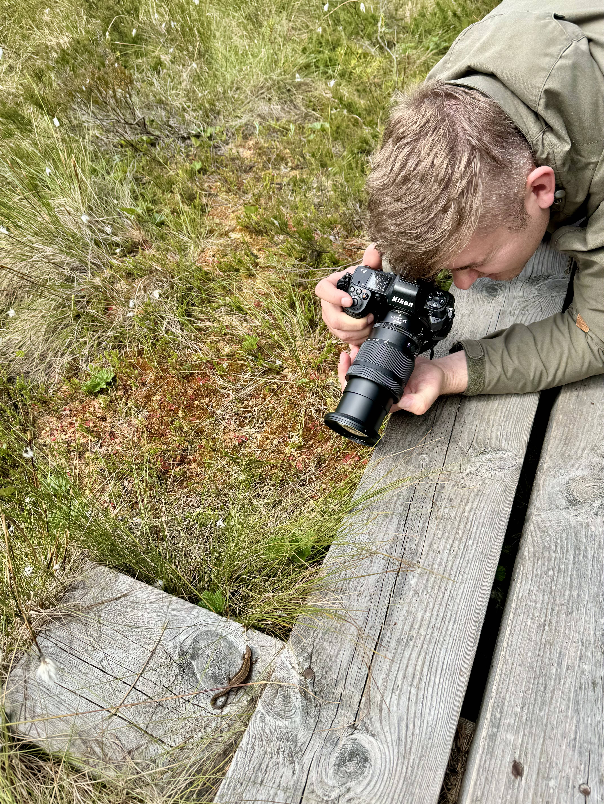

Nature photography from Estonia
Bogs, seaside, and northern lights through the lens of Raido Rüütel.
View GalleryAbout
I’m Raido Rüütel, a hobby photographer drawn to quiet moments in nature — misty bogs at dawn, windswept Baltic shores, and the glow of northern lights. This page is a small selection of scenes that make me pause and look longer.
My photography is about patience and presence. I prefer unhurried walks and soft light, letting weather and seasons set the mood.

Gallery


Contact
For prints or collaboration, feel free to reach out.
raido145@hotmail.com